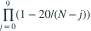

封闭总体先标记M=20个并放回，随后不放回捕获n=10个，其中m=0。参数空间为满足支撑的正整数N，没有预设上限。关于N的MLE哪项正确？
- A
- B
- C不存在有限MLE；似然随N增大趋于其上确界
- D
我已思考，展开答案与解析
正确答案：C
- 没有标记重捕的概率为 ，N≥30。
- 也可写成

，每个因子随N增加。 - 似然趋于1，但任何有限N都小于1，所以没有有限最大值。
易错提醒公式Mn/m在m=0时不能使用；零重捕不意味着总体等于M+n。
考后回忆 · 条件重建 · 回忆18的零重捕变式
依据考试回忆重建；数字、选项和必要条件为补充设定，非原题。